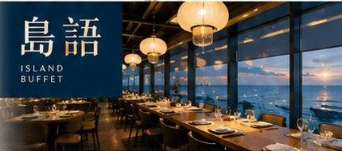

Make your own way
自行前往交通指南
🐟 Xpark
上午・水族館
☕ 台茂
下午・島語下午茶
🚄 高鐵
🚇 機場捷運
🚌 公車／台鐵
🚗 開車
🅿️ 停車
🚗 自行開車
🚌 客運公車
🚇 機場捷運
Xpark 水族館
桃園市中壢區春德路105號（置地廣場桃園內）
導航
鄰近高鐵與機場捷運站，無論搭乘大眾運輸或自行開車皆十分便利。
🚄 台灣高鐵
步行約 9 分鐘
搭乘高鐵至
高鐵桃園站
。
從
B1 連通道
依指標前往機場捷運方向（或由
6 號出口
出站）。
經過聯通天橋進入
華泰名品城
。
抵達
第一噴水池廣場
後右轉。
至
第二噴水池廣場
左轉華泰名品城大道。
搭手扶梯或樓梯上
二樓迴廊
直行。
即可抵達 Xpark。
💡 若從
高鐵新竹站
出發，車程僅需約
10 分鐘
即可抵達桃園站。
🚇 桃園機場捷運
步行約 8 分鐘
搭乘機捷至
A18 高鐵桃園站
（機場捷運高鐵桃園站）。
從
2 號出口
出站。
往右側聯通天橋進入
華泰名品城
。
循噴水池廣場與二樓迴廊動線（同高鐵路線）。
即可抵達 Xpark。
🚌 公車／台鐵轉乘
公車
步行約 10 分鐘
搭乘市區或高鐵快捷公車至「
高鐵桃園站
」公車站下車。
往斜前方標示「A18 高鐵桃園站」的
紅色電扶梯
上樓，進入連通天橋。
經華泰名品城即可抵達 Xpark。
台鐵轉乘
170
台鐵 中壢車站 轉乘
→ 高鐵桃園站
約 20 分
208
台鐵 內壢車站 轉乘
→ 高鐵桃園站
約 40 分
206
台鐵 桃園車站 轉乘
→ 高鐵桃園站
約 50 分
抵達高鐵桃園站後，依上方「公車」路線步行前往。
🚗 自行開車
交流道約 10 分鐘
行駛
國道二號（機場支線）
，於
大竹交流道
下。
往
青埔／桃園高鐵
方向行駛約 10 分鐘即可抵達。
🧭 導航可設定「
Xpark
」或「
置地廣場桃園
」。
🧭 導航至置地廣場桃園
🅿️ 停車場與折抵
停車場
置地廣場桃園 附設
24 小時地下停車場
（與新光影城、COZZI Blu 和逸飯店共用）
入口
B 區入口
，位於置地廣場．桃園 B 區
步行
至館內約 3～5 分鐘
收費標準（平假日相同）
$30
每半小時
$60
每小時
🎟️ 1 張 Xpark 成人票券 ＝ 折抵 2 小時
每輛車限抵一張、恕不累計。
離場前至停車場繳費機
掃描門票 QR Code
即可折抵。
🚙 若遇假日館內車位客滿，亦可停放於鄰近的
華泰名品城停車場
（同樣適用一張成人票折抵 2 小時之規則）。
🅿️ 導航至華泰名品城停車場

台茂購物中心（島語 6F）
桃園市蘆竹區南崁路一段112號6樓
導航
可透過國道一號自行開車前往，或搭乘來自雙北、桃園各區的多條客運路線，抵達周邊步行距離內的站牌。
🚗 自行開車
行駛
國道 1 號
（中山高速公路），於
49 公里
處下「
桃園（南崁）交流道
」。
往
蘆竹及桃園國際機場
方向直行，車程約
5 分鐘
即可抵達。
🧭 開啟 Google 地圖導航
🅿️ 車位數查詢
🚌 大眾運輸（客運與公車）
🚏 下車點皆為「台茂」或「台茂購物中心」站
台北市出發
5250
亞通巴士
松山機場－南崁－竹圍
1841
國光客運
松山機場－南崁－桃園國際機場
1842
國光客運
松山機場－南崁－大園
1961
大有巴士
台北西站－南崁－大園
1356
葛瑪蘭客運
圓山轉運站－南崁－溪洲
新北市出發
952
首都客運
板橋－南崁
桃園市區出發
桃園客運
5015
5022
5023
5059
中壢出發
703
亞通客運
竹圍－中壢
🚇 機場捷運轉乘
🚇
機場捷運 坑口站
A11
搭乘機場捷運至坑口站，出站
🚌
轉搭桃園客運
GR
捷運坑口站－桃園後火車站
📍
「台茂」站下車
即可抵達台茂購物中心
🗓️ 行程
🧭 導航到 Xpark